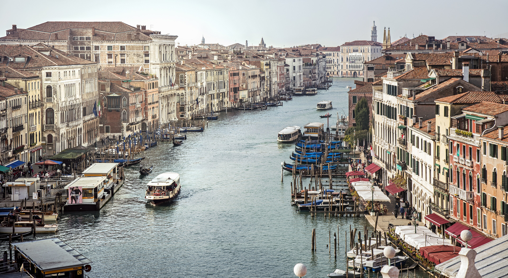
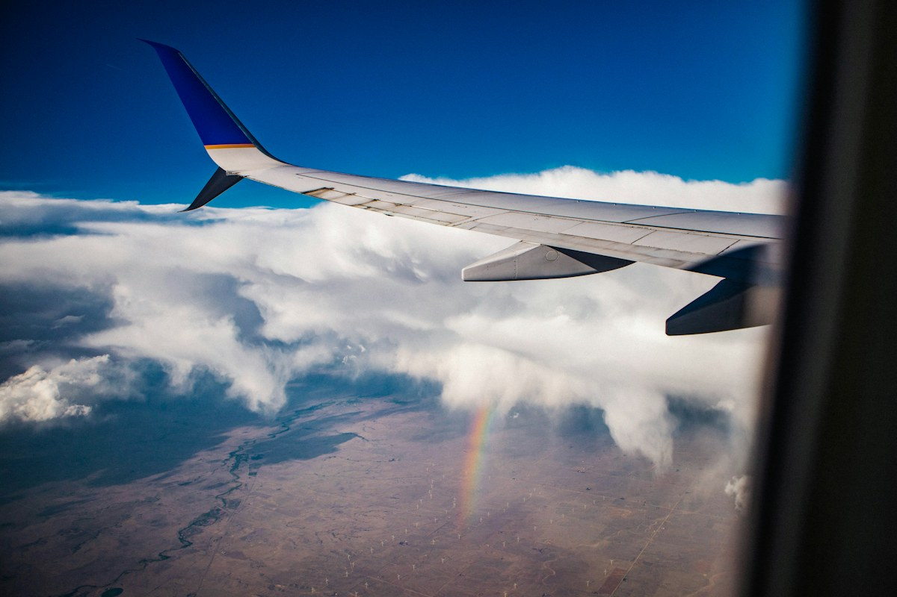
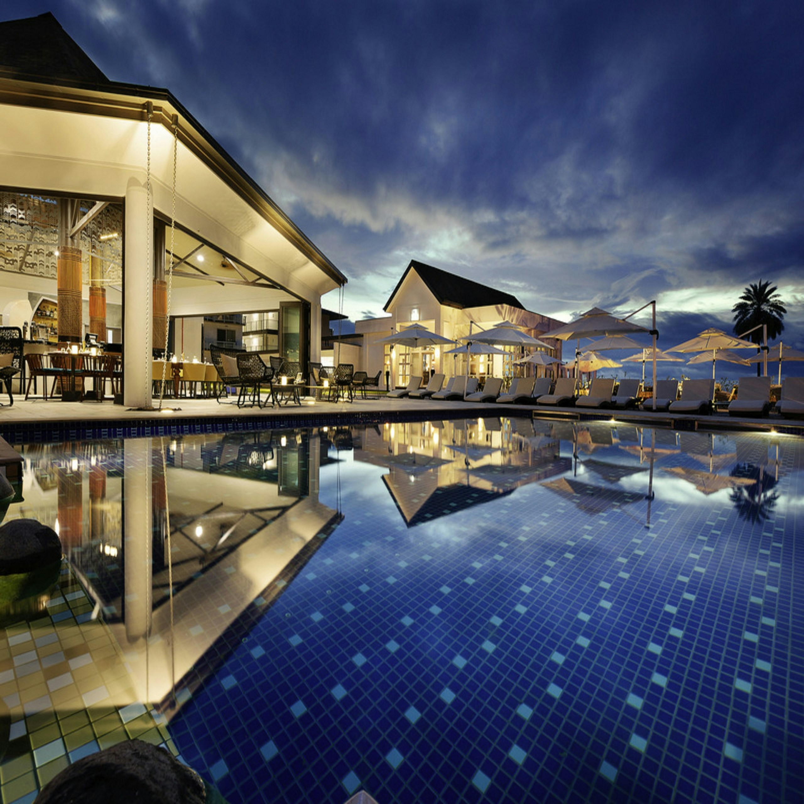

Saltar al contenido
Destinos
Consulta lugares, actividades y precios orientativos. Desde cada destino puedes buscar vuelos, hospedaje y recorridos con guía.
Explorar destinos ↓

Catálogo de destinos
Filtra por nombre, región o tipo de viaje.
↗No encontramos destinos con esos filtros.
Prueba otro nombre, amplía el presupuesto o limpia los filtros.
Créditos de las fotografías
Fotografías de Wikimedia Commons. Optimizadas en varios tamaños y encuadradas según la pantalla; conservan la licencia indicada.
Portadas de los 30 destinos incorporados
Cada recorrido incluye su propia fotografía y sus créditos en la sección Experiencias.
Alojamientos de los destinos nuevos
Alojamientos ficticios y fotografías de referencia, sin relación comercial con los establecimientos fotografiados.
- Horizonte Bangkok · Bangkok · Humsko · CC BY-SA 4.0
- Casa Aurora Bangkok · Bangkok · Maz3LT0v92 · CC BY-SA 4.0
- Panorama Bangkok · Bangkok · 104artsuites · CC BY-SA 4.0
- Horizonte Hong Kong · Hong Kong · 104artsuites · CC BY-SA 4.0
- Casa Aurora Hong Kong · Hong Kong · Christian Kloeppel · CC BY 2.0
- Panorama Hong Kong · Hong Kong · Photograph by Mike Peel (www.mikepeel.net). · CC BY-SA 4.0
- Horizonte Macao · Macao · Photograph by Mike Peel (www.mikepeel.net). · CC BY-SA 4.0
- Casa Aurora Macao · Macao · Photograph by Mike Peel (www.mikepeel.net). · CC BY-SA 4.0
- Panorama Macao · Macao · Photograph by Mike Peel (www.mikepeel.net). · CC BY-SA 4.0
- Horizonte Antalya · Antalya · Photograph by Mike Peel (www.mikepeel.net). · CC BY-SA 4.0
- Casa Aurora Antalya · Antalya · Photograph by Mike Peel (www.mikepeel.net). · CC BY-SA 4.0
- Panorama Antalya · Antalya · Photograph by Mike Peel (www.mikepeel.net). · CC BY-SA 4.0
- Horizonte Kuala Lumpur · Kuala Lumpur · Tandil Del Lago · CC BY-SA 4.0
- Casa Aurora Kuala Lumpur · Kuala Lumpur · Matti Blume · CC BY-SA 4.0
- Panorama Kuala Lumpur · Kuala Lumpur · IHG · CC BY-SA 4.0
- Horizonte Phuket · Phuket · Ithadidi · CC BY-SA 4.0
- Casa Aurora Phuket · Phuket · PaulPMoroney · CC BY-SA 4.0
- Panorama Phuket · Phuket · Didierlefort · CC BY-SA 3.0
- Horizonte Pattaya · Pattaya · Allvin Garamar · CC BY-SA 4.0
- Casa Aurora Pattaya · Pattaya · Hotel Shakti City Jakarta · CC BY-SA 4.0
- Panorama Pattaya · Pattaya · PaulPMoroney · CC BY-SA 4.0
- Horizonte Taipéi · Taipéi · Marc Gerard Del Rosario · CC BY-SA 2.0
- Casa Aurora Taipéi · Taipéi · Hotelre · CC BY 3.0
- Panorama Taipéi · Taipéi · Aishagrawal27 · CC BY-SA 4.0
- Horizonte Milán · Milán · Chad Davis from Minneapolis, United States · CC BY 2.0
- Casa Aurora Milán · Milán · Claudia Cárdenas Ovando · CC BY-SA 4.0
- Panorama Milán · Milán · Tiraspolsky · CC BY-SA 4.0
- Horizonte Viena · Viena · Matt @ PEK from Taipei, Taiwan · CC BY-SA 2.0
- Casa Aurora Viena · Viena · Gshiknis · CC BY-SA 4.0
- Panorama Viena · Viena · János Korom Dr. >17 Million views from Wien, Austria · CC BY-SA 2.0
- Horizonte Atenas · Atenas · Jony1988 · CC BY-SA 4.0
- Casa Aurora Atenas · Atenas · Matt @ PEK from Taipei, Taiwan · CC BY-SA 2.0
- Panorama Atenas · Atenas · Open Grid Scheduler / Grid Engine · Public domain
- Horizonte Budapest · Budapest · GocheGanas · CC BY-SA 3.0
- Casa Aurora Budapest · Budapest · cloud.shepherd · CC BY 2.0
- Panorama Budapest · Budapest · Sahil Dhiman · CC BY-SA 4.0
- Horizonte Florencia · Florencia · Matti Blume · CC BY-SA 4.0
- Casa Aurora Florencia · Florencia · Quant · CC BY-SA 3.0
- Panorama Florencia · Florencia · Markus Spiske markusspiske · Public domain
- Horizonte Múnich · Múnich · Another Believer · CC BY-SA 4.0
- Casa Aurora Múnich · Múnich · Allvin Garamar · CC BY-SA 4.0
- Panorama Múnich · Múnich · Neynyrhtak · CC BY-SA 4.0
- Horizonte Dublín · Dublín · Enola.d · CC BY-SA 4.0
- Casa Aurora Dublín · Dublín · Matti Blume · CC BY-SA 4.0
- Panorama Dublín · Dublín · Win4leisure · CC BY-SA 4.0
- Horizonte Edimburgo · Edimburgo · Matti Blume · CC BY-SA 4.0
- Casa Aurora Edimburgo · Edimburgo · Sidheeq · CC BY-SA 3.0
- Panorama Edimburgo · Edimburgo · Наталья Бутрим · Public domain
- Horizonte Pekín · Pekín · Matti Blume · CC BY-SA 4.0 DEED.EN
- Casa Aurora Pekín · Pekín · Takeaway · CC BY-SA 3.0
- Panorama Pekín · Pekín · Another Believer · CC BY-SA 4.0
- Horizonte Shanghái · Shanghái · Rufouslark · CC BY-SA 4.0
- Casa Aurora Shanghái · Shanghái · Photograph by Mike Peel (www.mikepeel.net). · CC BY-SA 4.0
- Panorama Shanghái · Shanghái · Photograph by Mike Peel (www.mikepeel.net). · CC BY-SA 4.0
- Horizonte Hanói · Hanói · The Down Town Hotel · CC BY-SA 4.0
- Casa Aurora Hanói · Hanói · Another Believer · CC BY-SA 4.0
- Panorama Hanói · Hanói · Shixart1985 · CC BY 2.0
- Horizonte Ciudad Ho Chi Minh · Ciudad Ho Chi Minh · Photograph by Mike Peel (www.mikepeel.net). · CC BY-SA 4.0
- Casa Aurora Ciudad Ho Chi Minh · Ciudad Ho Chi Minh · Photograph by Mike Peel (www.mikepeel.net). · CC BY-SA 4.0
- Panorama Ciudad Ho Chi Minh · Ciudad Ho Chi Minh · Photograph by Mike Peel (www.mikepeel.net). · CC BY-SA 4.0
- Horizonte Delhi · Delhi · Photograph by Mike Peel (www.mikepeel.net). · CC BY-SA 4.0
- Casa Aurora Delhi · Delhi · Tonylyongreas · CC BY-SA 4.0
- Panorama Delhi · Delhi · Mx. Granger · Public domain
- Horizonte Mumbai · Mumbai · Decoyboy · CC BY-SA 4.0
- Casa Aurora Mumbai · Mumbai · Aishagrawal27 · CC BY-SA 4.0
- Panorama Mumbai · Mumbai · M.Tarnowski · CC BY-SA 3.0
- Horizonte Agra · Agra · Paradisus Bali · CC BY-SA 4.0
- Casa Aurora Agra · Agra · Matt @ PEK from Taipei, Taiwan · CC BY-SA 2.0
- Panorama Agra · Agra · The Down Town Hotel · CC BY-SA 4.0
- Horizonte Jaipur · Jaipur · Eddie Maloney from North Las Vegas, USA · CC BY-SA 2.0
- Casa Aurora Jaipur · Jaipur · BTLVEC · CC BY-SA 4.0
- Panorama Jaipur · Jaipur · Matti Blume · CC BY-SA 4.0
- Horizonte El Cairo · El Cairo · BTLVEC · CC BY-SA 4.0
- Casa Aurora El Cairo · El Cairo · Kklerks · CC BY-SA 3.0
- Panorama El Cairo · El Cairo · Another Believer · CC BY-SA 4.0
- Horizonte Marrakech · Marrakech · Indushotel · CC BY-SA 4.0
- Casa Aurora Marrakech · Marrakech · deror_avi · CC BY-SA 3.0
- Panorama Marrakech · Marrakech · Matti Blume · CC BY-SA 4.0
- Horizonte Ciudad del Cabo · Ciudad del Cabo · ART HOTEL BISHKEK-KYRGYZSTAN · CC BY-SA 4.0
- Casa Aurora Ciudad del Cabo · Ciudad del Cabo · Teetrikart · CC BY-SA 4.0
- Panorama Ciudad del Cabo · Ciudad del Cabo · Famartin · CC BY-SA 4.0
- Horizonte La Meca · La Meca · Famartin · CC BY-SA 4.0
- Casa Aurora La Meca · La Meca · .mw-parser-output .commons-creator-table{background-color:#f0f0ff;box-sizing:border-box;font-size:95%;text-align:start;color:inherit}.mw-parser-output .commons-creator-table>tbody>tr{vertical-align:top}.mw-parser-output .commons-creator-table>tbody>tr>th{background-color:var(--background-color-neutral,#e0e0ee);font-weight:bold;text-align:start;color:inherit}.mw-parser-output .mw-collapsible-toggle-expanded.mw-collapsible-arrowtoggle,.mw-parser-output .mw-collapsible-toggle-expanded .mw-collapsible-arrowtoggle{padding-left:20px!important;background-image:url("https://upload.wikimedia.org/wikipedia/commons/1/10/MediaWiki_Vector_skin_action_arrow.png");background-repeat:no-repeat;background-position:left center}.mw-parser-output .mw-collapsible-toggle-collapsed.mw-collapsible-arrowtoggle,.mw-parser-output .mw-collapsible-toggle-collapsed .mw-collapsible-arrowtoggle{padding-left:20px!important;background-repeat:no-repeat}.mw-parser-output .commons-creator-table[dir="ltr"] .mw-collapsible-toggle-collapsed.mw-collapsible-arrowtoggle,.mw-parser-output .commons-creator-table[dir="ltr"] .mw-collapsible-toggle-collapsed .mw-collapsible-arrowtoggle{background-image:url("https://upload.wikimedia.org/wikipedia/commons/4/41/MediaWiki_Vector_skin_right_arrow.png");background-position:left center}.mw-parser-output .commons-creator-table[dir="rtl"] .mw-collapsible-toggle-collapsed.mw-collapsible-arrowtoggle,.mw-parser-output .commons-creator-table[dir="rtl"] .mw-collapsible-toggle-collapsed .mw-collapsible-arrowtoggle{background-image:url("https://upload.wikimedia.org/wikipedia/commons/1/1e/MediaWiki_Vector_skin_left_arrow.png");background-position:right center}@media(max-width:719px){.mw-parser-output .commons-creator-table,.mw-parser-output .commons-creator-table>tbody{box-sizing:border-box;display:block;width:100%}.mw-parser-output .commons-creator-table>tbody{border-right:1px solid var(--border-color-base,#aaa);border-bottom:1px solid var(--border-color-base,#aaa)}.mw-parser-output .commons-creator-table>tbody>tr{border-top:1px solid var(--border-color-base,#aaa);display:flex;flex-wrap:wrap}.mw-parser-output .commons-creator-table>tbody>tr>th{border-left:1px solid var(--border-color-base,#aaa);padding:2px;flex:1 1 100%}.mw-parser-output .commons-creator-table>tbody>tr>td{border-left:1px solid var(--border-color-base,#aaa);padding:2px;flex:1 1}}@media(min-width:720px){.mw-parser-output .commons-creator-table{border:1px solid var(--border-color-base,#aaa);border-collapse:collapse;border-spacing:0;padding:5px}.mw-parser-output .commons-creator-table>tbody>tr>th,.mw-parser-output .commons-creator-table>tbody>tr>td{border:1px solid var(--border-color-base,#aaa);padding:2px}.mw-parser-output .commons-creator-table>tbody>tr>.halfwidth{max-width:10em}.mw-parser-output .commons-creator-table>tbody>tr>.fullwidth{max-width:20em}}@media screen{html.skin-theme-clientpref-night .mw-parser-output .commons-creator-table{background-color:#0c0b19}}@media screen and (prefers-color-scheme:dark){html.skin-theme-clientpref-os .mw-parser-output .commons-creator-table{background-color:#0c0b19}}
Benoît Prieur (1975–) · Public domain
- Panorama La Meca · La Meca · فندق درة النعيم · CC BY-SA 4.0
- Horizonte Medina · Medina · Another Believer · CC BY-SA 4.0
- Casa Aurora Medina · Medina · © 1971markus · CC BY-SA 4.0
- Panorama Medina · Medina · فندق درة النعيم · CC BY-SA 4.0
- Horizonte Shenzhen · Shenzhen · فندق درة النعيم · CC BY-SA 4.0
- Casa Aurora Shenzhen · Shenzhen · Takeaway · CC BY-SA 3.0
- Panorama Shenzhen · Shenzhen · Deror_avi · CC BY-SA 3.0
Vuelos
Compara horarios, equipaje y tarifas por pasajero.

Hospedaje
Compara habitaciones y consulta el total según noches y huéspedes.

No hay hoteles con esos filtros.
Amplía el precio o cambia la categoría.


_-_Night_(52142126561).jpg){kind=link}


.jpg){kind=link}
.jpg){kind=link}


.jpg){kind=link}


_(1).jpg){kind=link}
.jpg){kind=link}


_-_img_01.jpg){kind=link}
.jpg){kind=link}

_(cropped).jpg){kind=link}

.jpg){kind=link}


.jpg){kind=link}


.jpg){kind=link}


.jpg){kind=link}


.jpg){kind=link}

.jpg){kind=link}

.jpg){kind=link}
.jpg){kind=link}

.jpg){kind=link}

.jpg){kind=link}

.jpg){kind=link}
_-_008.jpg){kind=link}


.jpg){kind=link}

.jpg){kind=link}


.jpg){kind=link}

_-_005.jpg){kind=link}


_-_001.jpg){kind=link}


.jpg){kind=link}

.jpg){kind=link}

.jpg){kind=link}


_-_001.jpg){kind=link}


.jpg){kind=link}


.jpg){kind=link}